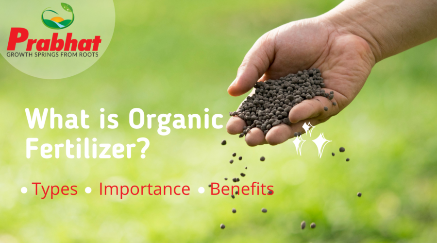

Green Revolution
Healthy Soil • Healthy Food • Healthy Life
Why Natural Farming?
- Improves soil fertility
- Protects environment
- Safe for farmers and consumers
- Reduces chemical pollution

Natural farming is an agricultural system that focuses on growing crops in harmony with nature without using chemical fertilizers, pesticides, or synthetic substances. It treats soil as a living ecosystem and encourages the growth of beneficial microorganisms that naturally support plant nutrition. By using organic inputs such as compost, cow dung, green manure, bio-fertilizers, and plant-based solutions, natural farming improves soil fertility in a sustainable way.
What is Natural Farming?
Natural farming is a sustainable agricultural approach that works in harmony with natural processes. It encourages farmers to use locally available natural resources such as compost, cow-based inputs, plant extracts, and organic waste.
This method reduces cultivation cost, improves biodiversity, and ensures long-term productivity while protecting the environment.

Organic fertilizers provide balanced nutrition while maintaining soil health. Unlike chemical fertilizers, they support beneficial microorganisms.
Learning Through Practice
Practical demonstrations help farmers understand organic fertilizer preparation using simple and cost-effective methods.